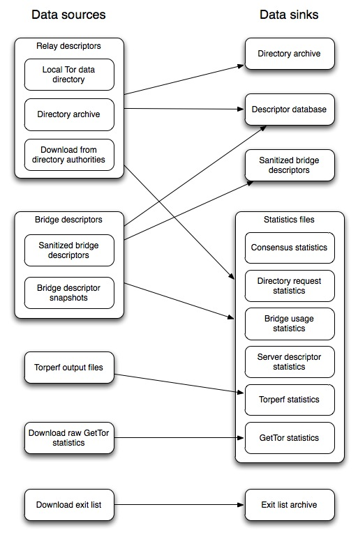

Tor Metrics Portal: HOWTO
The main task of ERNIE is to process Tor data from various sources to make it useful for statistical analysis. This HOWTO explains the various data sources that ERNIE can process and the data sinks that it writes its results to.
Overview of data sources and sinks

Data sources
- Relay descriptors: Relay descriptors subsume all documents that relays and the directory authorities publish. There are four types of relay descriptors: server descriptors, extra-info descriptors, and network status votes and consensuses (short: votes and consensuses). Relay descriptors can come from at least three different sources:
- Local Tor data directory: Every Tor client downloads most of the relay descriptors in order to build circuits. The cached-* files that can be found in a Tor data directory can be parsed to learn about recent relay descriptors.
- Directory archive: There are two tools that collect relay descriptors and write them to a directory structure: the directory-archive script that can be found in contrib/directory-archive/ in the Tor sources and ERNIE (with the Directory archive data sink).
- Download from directory authorities: Recent relay descriptors can be downloaded from the directory authorities (or directory mirrors in theory) via HTTP.
- Bridge descriptors: Bridge descriptors consist of the same documents as relay descriptors, but are published by bridge relays to the bridge authority. There are two sources for bridge descriptors:
- Sanitized bridge descriptors: Bridge descriptors in their original form contain sensitive information like IP addresses and bridge identities that can be used to find out bridge IP addresses. We provide sanitized bridge descriptors that have all potentially sensitive data removed. One way to sanitize bridge descriptors is to use ERNIE (with the Sanitized bridge descriptors data sink).
- Bridge descriptor snapshots: The bridge authority takes half-hourly snapshots of the bridge descriptors in its data directory. These (unsanitized) bridge descriptors can be the input to produce sanitized bridge descriptors for later publication.
- Torperf output files: The torperf tool measures the user-perceived performance of the Tor network and writes its results to text files. These files can be the input for generating torperf statistics.
- Download raw GetTor statistics: GetTor allows users to fetch Tor via email. GetTor provides basic statistics about delivered packages per day which can be transformed into CSV files for generating GetTor statistics.
- Download exit list: The exit list contains a list of IP addresses of exit relays. These IP addresses can be different from the IP addresses that relays use to be contacted from within the Tor network. Currently, the downloaded exit lists are written to a local directory structure for later analysis.
Data sinks
- Directory archive: The directory archive contains all types of relay descriptors, sorted into a local directory structure. The main purpose of directory archives is to make them available as data source for others.
- Descriptor database: A local descriptor database can be used to import both relay and bridge descriptors from the various data sources. Often, performing ad-hoc analyses is easier with a database instead of developing a statistics file format first including files for intermediate results.
- Sanitized bridge descriptors: The sanitized bridge descriptors are the result of stripping of all potentially sensitive data from bridge descriptor snapshots. The descriptors are sorted into a directory structure similar to the relay descriptor directory structure.
- Statistics files: The statistics files are CSV files that have been designed for later analysis with R or other statistics tools. There are various statistics files, depending on the data that shall be analyzed:
- Consensus statistics: Consensus statistics contain aggregated data extracted from relay consensuses and bridge statuses. For every day the consensus statistics list the number of running relays with certain flags assigned by the directory authorities and the number of running bridges.
- Directory request statistics: The directory authorities and directory mirrors learn from client requests how many users there are from which countries per day. The directory request statistics contain these user numbers for a given list of directory authorities/mirrors.
- Bridge usage statistics: Bridges record unique IP addresses by country to obtain rough user numbers. The bridge usage statistics accumulate user numbers by country per day.
- Server descriptor statistics: Relays advertise some of their capabilities in their server descriptors. The server descriptor statistics combine these server descriptors with the consensuses to obtain statistics on running relays, e.g., software version, operating system, or advertised bandwidth.
- Torperf statistics: The torperf statistics contain an aggregated version of the torperf output files. For every date, the torperf statistics file contains median, first and third quartile of download times on that date.
- GetTor statistics: The GetTor statistics file contains the number of delivered package by type and date.
- Exit list archive: The exit list archive is a local directory structure containing a separate file for every downloaded exit list.